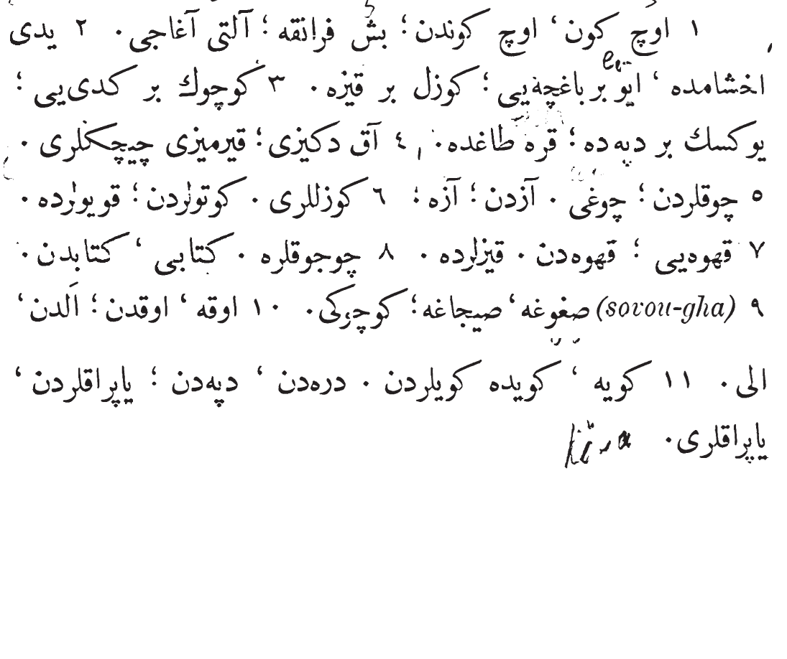

You are under no obligation to complete these exercises. There are a lot of them and you may not need to do them all to get the point. Feel free to pick and choose whatever you'd like to do or not do.
Note: You must know the Lesson 4 Vocabulary from the vocabulary section to do these exercises. Also, some exercises, especially the dialogue, will still have new vocabulary!
If you could do Exercise 1, then you can read this! This is the original Ottoman text of Exercise 1. Make sure to read the entire thing for "real" Ottoman reading practice.

Congratulations on reading your fourth Ottoman text!
Exercise 2: Translate into Ottoman (ترجمه)
Type the Ottoman translation for each English phrase below.
Note: You must use a Persian or Ottoman keyboard to be able to do this exercise.
1. The mountains; of the mountains; to the mountains; from the mountain.
2. Four [or] five trees; on the three trees; of the good trees; to the good trees, from the good trees.
3. Give the book (acc.) to the big [one]. From the big [one].
4. In the valley, to the valley. The valleys are green.
5. I saw the green hills, the black mountains, and the white flowers from the village.
6. In the hot (acc.); to the hot; from the hot (acc.).
7. I saw the gentlemen (acc.); to the gentleman; of the gentlemen; on the gentleman.
8. The green leaf (acc.); on the green leaves; on many leaves.
9. Of the coffee; in the coffee; from the coffee. To the coffee-houses (qah'véléré).
10. From the hot; from the cold; from the little and on the great.
11. To the white and the black (acc.).
12. To the black
تبريكات درس دوردنجى اكمال ايتدكز
Congratulations You finished the exercises for Lesson 4